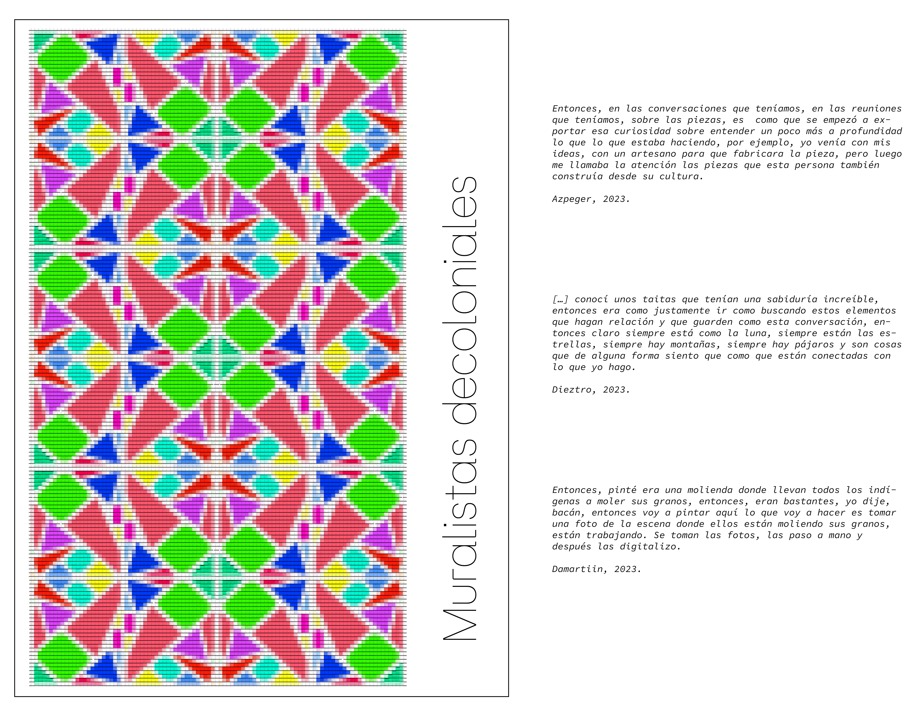
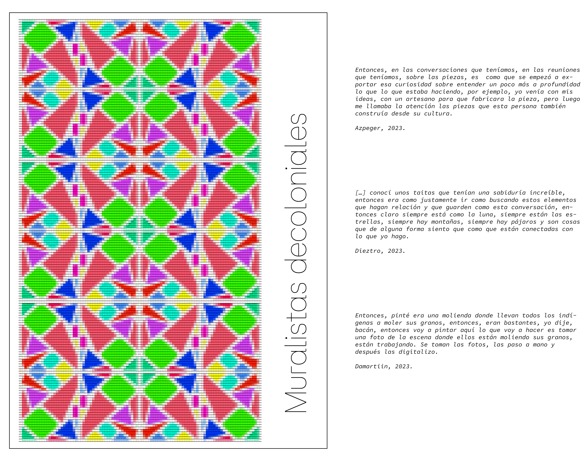

Los muralistas son agentes, donde sus obras transmiten este escape de la realidad, siempre están en constante introspección. Durante toda esta investigación, observe que lejos de folclorizar los muralistas sus raíces, se sumergen tanto en ellas con toda la intención de luego producir algo autentico y propio. Dejando del lado la belleza de las obras, se erige como una narrativa poderosa que desafía las narrativas hegemónicas, abraza la diversidad y construye puentes entre el arte y la comunidad.
Investigación:
Cualitativa, entrevistas.
Diseñada para:
De la investigación al arte.
Característica especial:
Expone diversas perspectivas sobre como relacionarnos con nuestras costumbres y artesanías.

 
